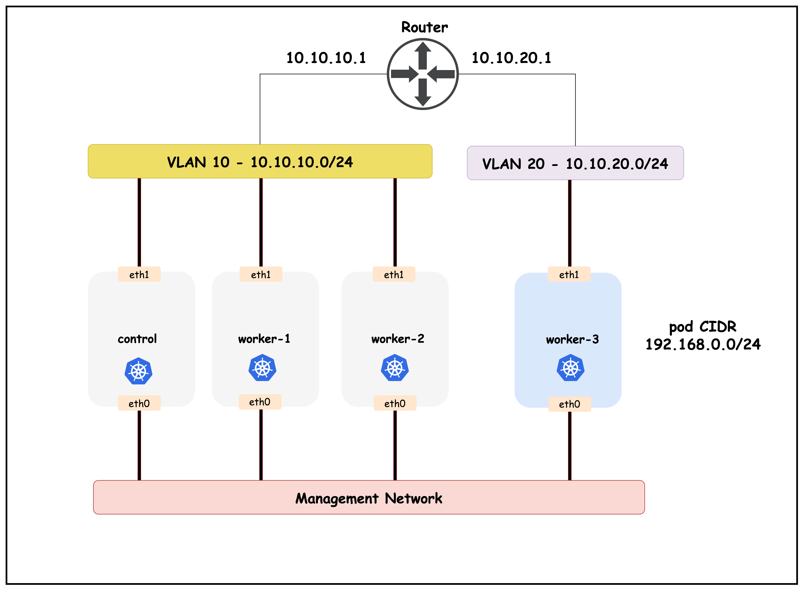

Node-to-node full mesh
CPW1W2W3
CP-●●●
W1●-●●
W2●●-●
W3●●●-
6条节点间会话
四个节点两两互联，会话数为 n(n-1)/2。
Lesson 10 · Calico BGP · Native Pod Routing
让节点把自己的 Pod /26 路由通告给 ToR，再由路由反射器把远端路由送回各节点，实现跨 VLAN 的原生 IP 转发。
Make workload routes first-class
192.168.46.129 ?
ToR 不知道目标 Pod 在 worker3 后面，外部网络也没有可靠回程。
192.168.46.128/26
via 10.10.20.20
ToR 把目标 block 关联到对应 Node IP，Pod 地址可以原生转发。
BGP 分发路由，不负责创建 Pod IP，也不会自动绕过 NetworkPolicy 或主机防火墙。
From IPAM to FIB
ToR 同时是外部路由器与 iBGP route reflector。它既保存各节点 Pod block，也把这些前缀反射给其他节点。
containerlab/10-calico-bgp-ippool
| 目录 | 关键文件 | 用途 |
|---|---|---|
| ContainerLab | topology.clab.yaml | 四节点跨 VLAN 10/20，eth1 MTU 9000 |
| Kind | k01-no-cni.yaml | Node IP 与 vlan 标签 |
| Calico | custom-resources.yaml | 无封装、无 NAT、允许 BGP export |
| BGP | bgpconfiguration-lb.yaml、bgppeer-vlan-*.yaml | AS、RR peer 与 prefixAdvertisements |
| cEOS | ceos01-startup-config.config | SVI、RR client、next-hop-self |
| Tools | multitool-*.yaml、nginx-deployment.yaml | 产生 Pod 与连通性测试 |
Node IP and labels
BGPPeer 的 nodeSelector 使用 vlan=10 与 vlan=20 标签，为不同子网选择各自可达的 SVI peer IP。
Course topology reference

本节沿用双子网物理拓扑，但 Workload IPPool 使用原生 BGP 路由，不再通过 VXLAN 穿越 VLAN。
k01-no-cni.yaml
nodeRegistration:
kubeletExtraArgs:
node-ip: "10.10.10.11"
node-labels: "vlan=10"nodeRegistration:
kubeletExtraArgs:
node-ip: "10.10.20.20"
node-labels: "vlan=20"BGP session source与路由下一跳。
BGPPeer selector 选择对应 VLAN 的节点。
Static node-subnet routes
# VLAN 10 nodes
ip addr add dev eth1 10.10.10.11/24
ip route add 10.10.20.0/24 via 10.10.10.1 src 10.10.10.11
# worker3 in VLAN 20
ip addr add dev eth1 10.10.20.20/24
ip route add 10.10.10.0/24 via 10.10.20.1 src 10.10.20.20BGP 依赖 TCP 179 的 Node-to-ToR 可达性。节点子网都不通时，Pod block 路由不可能正常交换。
Jumbo underlay in the lab
跨 VLAN 不增加 VXLAN/IP-in-IP 头。
实际可用 MTU 取决于路径最小值和 Pod veth 配置。
custom-resources.yaml
- name: default-ipv4-ippool
blockSize: 26
cidr: 192.168.0.0/17
encapsulation: None
natOutgoing: Disabled
nodeSelector: all()
disableBGPExport: falsePod 包以原始 IP 在 underlay 上路由。
出站保留 Pod 源地址，外部必须有回程路由。
允许该 Workload 池路由经 BGP 导出。
Three independent decisions
| 设置 | 本实验值 | 决定什么 | 看什么证据 |
|---|---|---|---|
| encapsulation | None | 跨节点包是否加隧道外层 | eth1 抓包没有 UDP 4789 / IPIP |
| natOutgoing | Disabled | 离开 Calico 池时是否 SNAT | 外部看到真实 Pod 源 IP |
| disableBGPExport | false | IPPool 路由能否对 BGP peer 导出 | ToR 学到 Pod /26 |
三项设置互不替代。BGP 可达不代表关闭 NAT，关闭 NAT 也不会自动建立 BGP 会话。
Block affinities become route units
| 节点 | IPAM block | ToR 下一跳 |
|---|---|---|
| k01-control-plane | 192.168.69.0/26 | 10.10.10.10 · Vlan10 |
| k01-worker | 192.168.42.192/26 | 10.10.10.11 · Vlan10 |
| k01-worker2 | 192.168.88.192/26 | 10.10.10.12 · Vlan10 |
| k01-worker3 | 192.168.46.128/26 | 10.10.20.20 · Vlan20 |
kubectl get blockaffinitiesbgpconfiguration-lb.yaml
spec:
asNumber: 65010
nodeToNodeMeshEnabled: false
serviceLoadBalancerIPs:
- cidr: 172.16.0.240/28
prefixAdvertisements:
- cidr: 192.168.0.0/17
communities:
- 65010:100BGP community semantics
上游按 community 做过滤、偏好、重分发或流量工程。
community 不提供可达性，仍需要合法 next-hop 和 BGP 会话。
bgppeer-vlan-10 / vlan-20
kind: BGPPeer
metadata:
name: bgppeer-vlan-10
spec:
peerIP: 10.10.10.1
asNumber: 65010
nodeSelector: vlan == '10'kind: BGPPeer
metadata:
name: bgppeer-vlan-20
spec:
peerIP: 10.10.20.1
asNumber: 65010
nodeSelector: vlan == '20'两个 peerIP 是同一台 cEOS 的两个 SVI。节点应连接本地 VLAN 网关，避免使用跨 VLAN 地址建立邻居。
One hub instead of a full mesh
四个节点两两互联，会话数为 n(n-1)/2。
每个节点只连接 ToR，由 ToR 反射客户端路由。
Arista listen ranges
router bgp 65010
router-id 10.10.10.1
neighbor CALICO-K8S peer group
bgp listen range 10.10.10.0/24 peer-group CALICO-K8S remote-as 65010
bgp listen range 10.10.20.0/24 peer-group CALICO-K8S remote-as 65010
neighbor CALICO-K8S next-hop-self
neighbor CALICO-K8S route-reflector-client
address-family ipv4
neighbor CALICO-K8S activatelisten range 允许 cEOS 根据来源地址动态创建邻居，peer group 统一应用 RR、next-hop 与 address-family 配置。
Reachable next hop across VLANs
worker 不需要直接解析 VLAN 20 的 worker3。它只需把远端 Pod 包交给本地网关 10.10.10.1。
show ip bgp summary
| Neighbor | 节点 | AS | 状态 | PfxRcd |
|---|---|---|---|---|
| 10.10.10.10 | control-plane | 65010 | Estab | 2 |
| 10.10.10.11 | worker | 65010 | Estab | 2 |
| 10.10.10.12 | worker2 | 65010 | Estab | 2 |
| 10.10.20.20 | worker3 | 65010 | Estab | 2 |
docker exec -it clab-calico-bgp-lb-ceos01 Cli
ceos> enable
ceos# show ip bgp summaryshow ip route
| 路由 | 下一跳 | 接口 | 来源 |
|---|---|---|---|
| 192.168.69.0/26 | 10.10.10.10 | Vlan10 | B I |
| 192.168.42.192/26 | 10.10.10.11 | Vlan10 | B I |
| 192.168.88.192/26 | 10.10.10.12 | Vlan10 | B I |
| 192.168.46.128/26 | 10.10.20.20 | Vlan20 | B I |
四条前缀与 Block Affinity 一一对应。B I 表示 BGP 学习的内部路由，课程示例管理距离为 200。
Two address families of purpose
192.168.x.x/26
下一跳是 block 所属节点，来自 Default Workload IPPool。
172.16.0.240/28
由 serviceLoadBalancerIPs 控制通告，可能从一个或多个节点出现。
课程 show ip route 同时出现两类 BGP 前缀。本节验证 Pod 直达时以四条 192.168 /26 为主。
Four clients, one routing view
Agent, BGP and Routes
apiVersion: projectcalico.org/v3
kind: CalicoNodeStatus
metadata:
name: k01-control-plane
spec:
classes: [Agent, BGP, Routes]
node: k01-control-plane
updatePeriodSeconds: 10CalicoNodeStatus 会周期采集状态，适合临时排障。验证完成后应删除，避免在大集群长期增加状态采集负担。
learnedFrom BGPPeer and type FIB
kubectl get caliconodestatus k01-control-plane -o json |
jq '.status.routes.routesV4[] |
select(.learnedFrom.sourceType == "BGPPeer" and .type == "FIB")'
destination: 192.168.42.192/26 gateway: 10.10.10.1 interface: eth1
destination: 192.168.46.128/26 gateway: 10.10.10.1 interface: eth1
destination: 192.168.88.192/26 gateway: 10.10.10.1 interface: eth1本地 192.168.69.0/26 不需要从 peer 学习，因此过滤结果只出现另外三个节点的 block。
ip route grep bird
root@k01-control-plane:/# ip route | grep bird
192.168.42.192/26 via 10.10.10.1 dev eth1 proto bird
192.168.46.128/26 via 10.10.10.1 dev eth1 proto bird
blackhole 192.168.69.0/26 proto bird
192.168.88.192/26 via 10.10.10.1 dev eth1 proto birdvia ToR 本地 SVI，dev eth1。
blackhole 聚合路由由更具体 Pod 路由覆盖。
Life of an ICMP echo request
整个路径没有 VXLAN/IP-in-IP，也没有把源 Pod IP 改成 Node IP。ToR 按 /26 直接转发。
Return path is equally important
192.168.42.192/26 via 10.10.20.1。
192.168.42.192/26 via 10.10.10.11。
Ping output as secondary evidence
PING 192.168.46.129 (192.168.46.129) 56(84) bytes of data.
64 bytes from 192.168.46.129: icmp_seq=1 ttl=61 time=1.97 ms
64 bytes from 192.168.46.129: icmp_seq=2 ttl=61 time=1.49 ms
64 bytes from 192.168.46.129: icmp_seq=3 ttl=61 time=1.56 msExternal reachability proof
ceos> ping 192.168.42.193
80 bytes from 192.168.42.193
ttl=63 time=0.711 ms
5 packets transmitted
5 received
0% packet lossceos> ping 192.168.46.129
80 bytes from 192.168.46.129
ttl=63 time=0.480 ms
5 packets transmitted
5 received
0% packet loss外部路由器直接使用 Pod IP 作为目的地址，证明 Pod 地址已经成为 underlay 可路由前缀。
No NAT means real return-path requirements
只有 ToR 本机能访问 Pod，更远网络不知道 Pod CIDR 下一跳。
请求到达 Pod，但回复在外部路径丢失。
Control plane and data plane evidence
tcpdump -ni eth1 tcp port 179
10.10.10.11 ↔ 10.10.10.1
OPEN / KEEPALIVE / UPDATE验证会话与路由更新确实经过 Node underlay。
tcpdump -ni eth1 host 192.168.46.129
192.168.42.193 → 192.168.46.129
ICMP echo request验证没有 VXLAN/IPIP，也没有 SNAT 成 Node IP。
Separate session, route and packet problems
BGPPeer selector 不匹配，节点没有对 ToR 建会话。
会话停在 Active/Connect，路由不会交换。
会话正常，但 ToR 看不到 Workload /26。
路由存在但无法安装或数据包无法转发。
外部看到 Node IP，无法验证真实 Pod 地址直达。
ToR 能访问 Pod，更远客户端仍然失败。
Find the first missing route fact
| 现象 | 优先检查 | 命令 | 判断 |
|---|---|---|---|
| 缺少某节点邻居 | Node label、BGPPeer、TCP 179 | kubectl get nodes --show-labels; kubectl get bgppeers -o yaml; show ip bgp summary | selector 与 peerIP |
会话正常但缺 /26 | IPPool export 与 Block Affinity | kubectl get ippool default-ipv4-ippool -o yaml; kubectl get blockaffinities | block 是否存在并允许导出 |
| ToR 有路由，节点没有 | RR、next-hop-self 与 Node BGP | show ip bgp; kubectl get caliconodestatus -o yaml | 路由是否被反射和安装 |
| 双方有路由但 Ping 失败 | 内核 FIB、MTU、防火墙与策略 | ip route get POD_IP; tcpdump -ni eth1; kubectl get networkpolicy -A | 转入数据面排障 |
| ToR 通，更远网络不通 | 上游路由传播与回程 | show ip bgp PREFIX; traceroute POD_IP | Pod 前缀是否继续发布 |
顺序：会话、ToR BGP/RIB、Node FIB、数据包、上游回程。
Topology, sessions, routes, packets
containerlab inspect topology.clab.yaml确认四节点与 cEOS。kubectl get nodes -L vlan -o wide核对 Node IP 与标签。kubectl get ippool default-ipv4-ippool -o yaml确认 None、NAT Disabled、Export false。kubectl get blockaffinities记录四个 /26。kubectl get bgpconfiguration,bgppeer -o wide核对 AS 与两个 peer。show ip bgp summary确认四条 Estab。show ip route对齐四个 block。kubectl apply -f caliconodestatus.yaml查看节点学到的 FIB。ip route | grep bird验证内核转发路由。ping POD_IP / tcpdump验证跨 VLAN 与外部直达。清理：删除临时 CalicoNodeStatus，然后运行 ./destroy.sh 并确认删除范围。
Summary and sources
IPPool 关闭封装与 NAT，并允许 Workload 路由导出。
四个节点把 /26 上送 cEOS，cEOS 反射远端前缀。
ToR RIB、Node FIB 与抓包共同证明跨 VLAN 和外部直达。